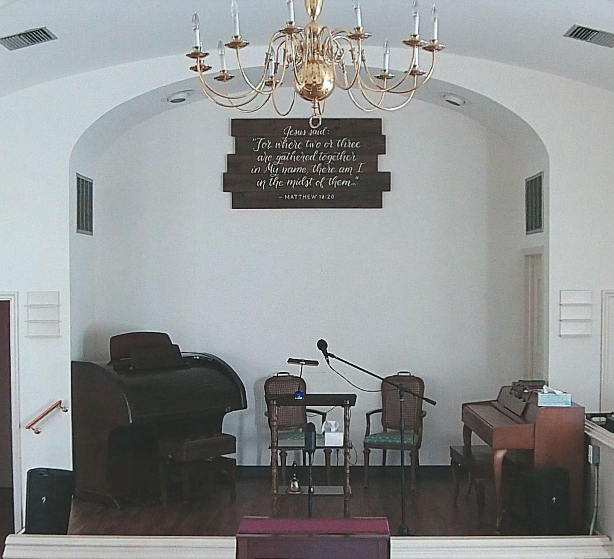
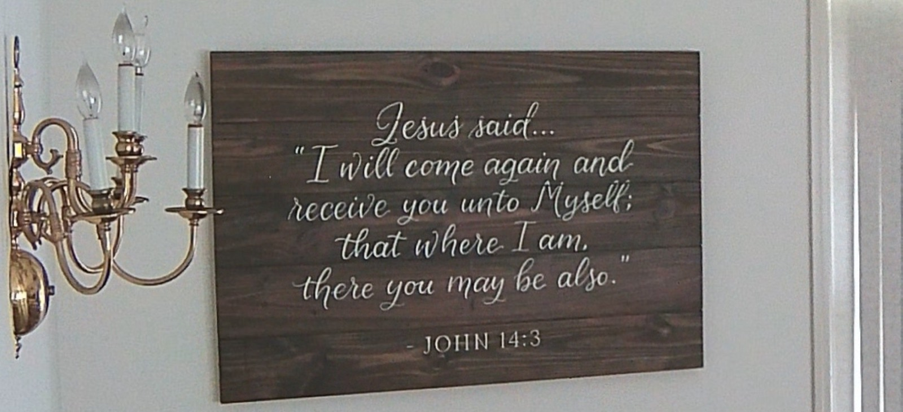
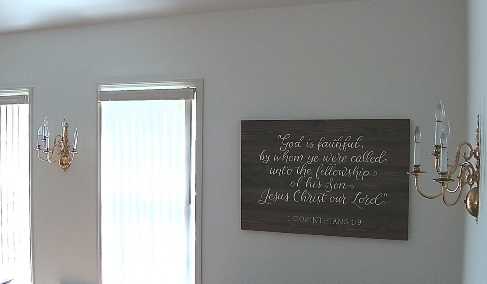
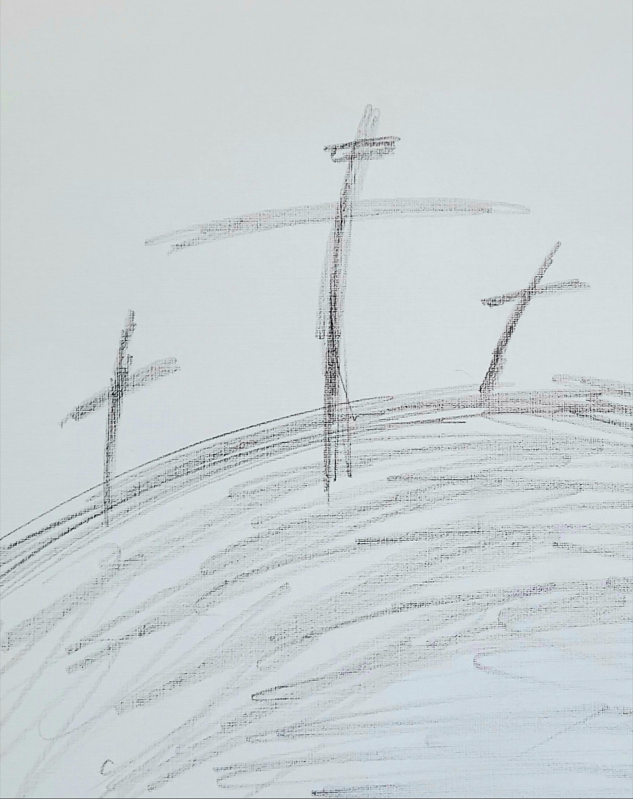

Pictures
A look at the chapel at 210 Bell Ave, Brooksville.






Wall art produced by Signed Cricket, LLC (Emily Groth).
A look at the chapel at 210 Bell Ave, Brooksville.




Wall art produced by Signed Cricket, LLC (Emily Groth).